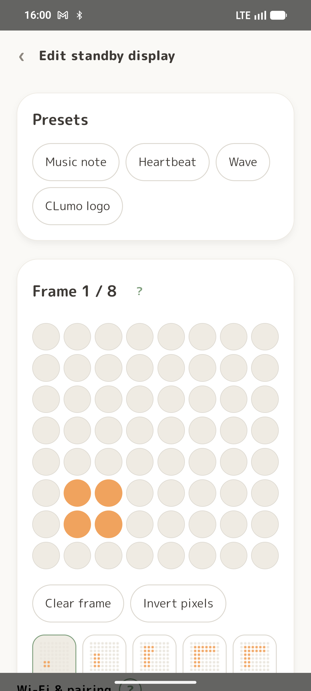
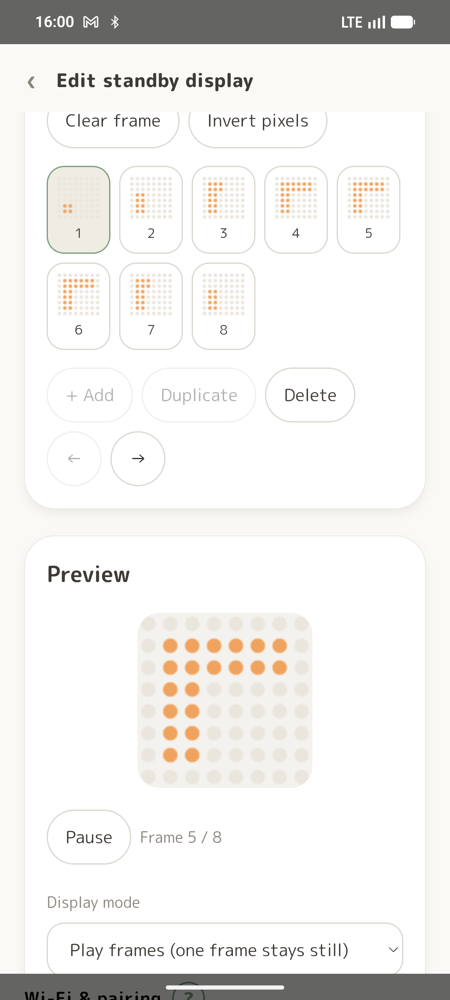
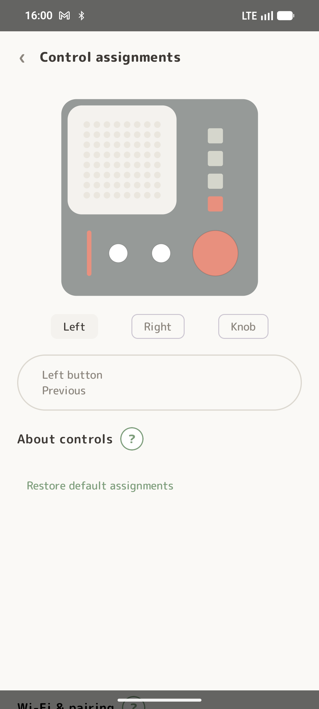

図解 → 対応環境の比較 → Android接続 → 表示編集 → 操作割り当て、の順で掲載。

[English](features.md) | 日本語
現行実装に基づく比較。通常Bluetoothモードで、スマホとスタンドが接続済みの場合。Androidの「アプリあり」は対応するCLumoアプリが接続し、必要なバックグラウンドサービスが稼働している状態を指す。インストールしただけでは音量配信やビジュアライザは動かない。
| 機能 | Android：CLumoアプリあり | Android：アプリなし | iOS（iPhone） |
| ノブで音量操作 | 対応（BLE HID） | 対応（BLE HID） | 対応（BLE HID） |
| 再生／一時停止 | 対応（ノブ短押し） | 対応 | 対応 |
| 前へ／次へ | 対応。初期値は左右ボタンとノブ3回／2回押し | 対応 | 対応 |
| ミュート | 割り当て可能。Android実動作は未確認 | 同左 | 実機確認済み |
| 音声アシスタント | 割り当て可能。Gemini等の実動作は未確認 | 同左 | Siri起動を実機確認済み |
| 早送り／巻き戻し | 試験的な割り当て。固定秒数指定ではない・実動作未確認 | 同左 | 同左 |
| 操作割り当て・初期値復元 | アプリまたはWi-Fi編集画面 | Wi-Fi編集画面 | Wi-Fi編集画面（iPhoneブラウザ未検証） |
| 実音量の3連LED表示 | 対応。アプリが500ms周期で報告 | 非対応。実音量は不明 | 対応。AMSから取得、アプリ不要 |
| 音声ビジュアライザ | 対応。アプリの開始操作・音声取得権限・配信が必要 | 非対応 | 非対応 |
| マトリクスの操作アニメーション | 対応 | 対応 | 対応 |
| 音量操作時の3灯シーケンス | 実音量取得中は出さない。不明時のみ表示 | 操作時に表示 | AMS音量取得中は出さない。不明時のみ表示 |
| 保存した待機画像／アニメーションの再生 | 対応 | 対応 | 対応 |
| Androidアプリで静止画・最大8コマ編集 | Android実機で読み書き確認済み | アプリが必要 | 非対応 |
| ブラウザでプリセット選択・最大8コマ編集 | 対応（Wi-Fi設定モード） | 対応（Wi-Fi設定モード） | 実装上対応（Wi-Fi設定モード）。iPhoneブラウザの実機確認は未実施 |
| Androidアプリで輝度・待機表示設定 | 対応 | アプリが必要 | Androidアプリは利用不可。ブラウザ編集を使用 |
- 音楽操作はOSへのHIDコマンド。曲送りなどへの応答は再生アプリの対応にも依存する。
- Androidアプリの画面を閉じることと、サービス／配信を停止することは別。サービスと接続が続けば音量を報告できる。ビジュアライザのStopだけでは音量配信は停止しない。サービス終了などで音量報告が2秒途絶えると実音量は不明になる。
- 待機表示は本体に保存したデータを再生する機能で、スマホ接続は不要。操作表示や受信中のビジュアライザが優先される。画像・アニメーションの編集にはAndroidアプリの対応機能、またはWi-Fi設定ページを使う。Androidとブラウザで同じエディターを使用し、静止画（1コマ）と最大8コマのアニメーションを編集できる。Android実機の読み書き・復元を確認。ブラウザとの往復編集は未確認。
- Wi-Fi設定中は通常Bluetooth動作を停止するため、HID操作・音量取得・音声ビジュアライザは使えない。ブラウザプレビューは画面内だけ。本体はWi-Fiマークを表示し、保存後も設定モードを継続する。
- 左右ボタンを同時に3秒長押しすると設定モードへ移り、同じ操作で通常モードへ戻る。保存した待機表示は通常モードへ戻ると反映される。
- 新規ペアリングはノブ3秒長押しで60秒受付。登録済み端末は長押しせず再接続する。新規受付中は登録済み／未登録の双方を受け付けるため、切り替え元の端末は切断する。接続は同時に1台まで。
AndroidとiPhoneでノブの音量操作・実音量受信・3連LED追従を確認済み。Androidでは音量停止／復帰／アプリGATT再接続も検証済み。英語のブラウザ設定ページはAndroid Chromeで実機表示・設定読込を確認した。
表の「対応」は実装の機能範囲であり、全OS・全音楽アプリ・全操作の組み合わせを実機検証した意味ではない。iPhoneブラウザでの編集、iPhone切断後のAMS再取得、Service Changedによる再探索、長時間運転は未確認。未確認を非対応とは扱わない。
操作割り当てはAndroidアプリまたはWi-Fi編集画面で変更でき、初期値へ戻せる。ノブ2回は次へ、3回は前へが初期値。設定は本体に保存し、両画面で共有する。



スクリーンショットはAndroid実機の英語UI。Web画面もAndroid Chromeで撮影。アプリ内のLED図は装飾で、実音量の表示ではありません。エディターのオレンジは実物LEDの発光色ではありません。